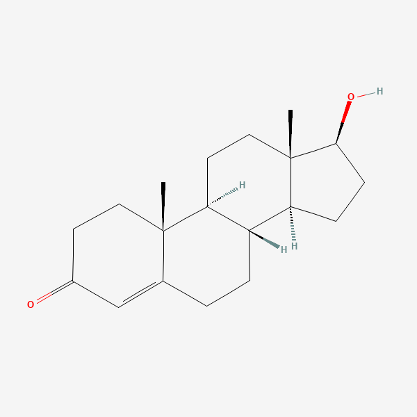
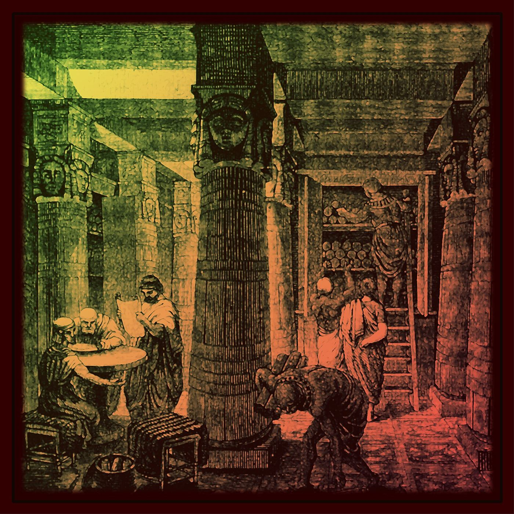
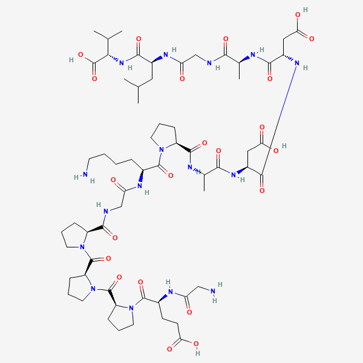
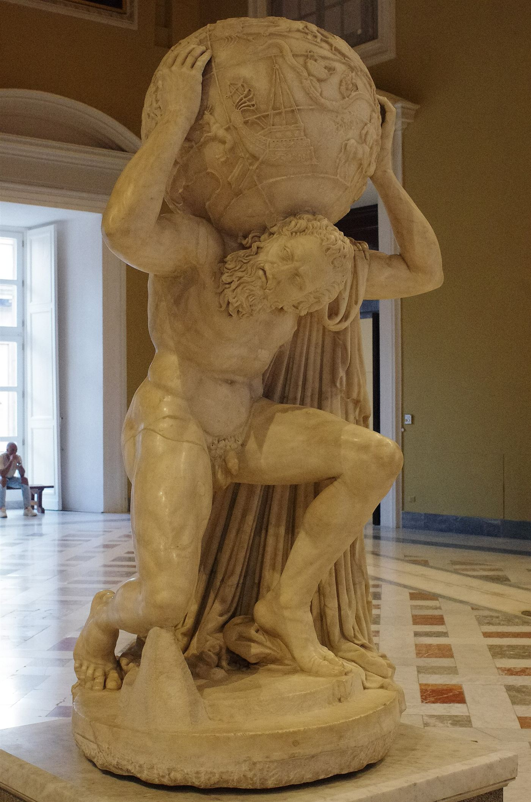
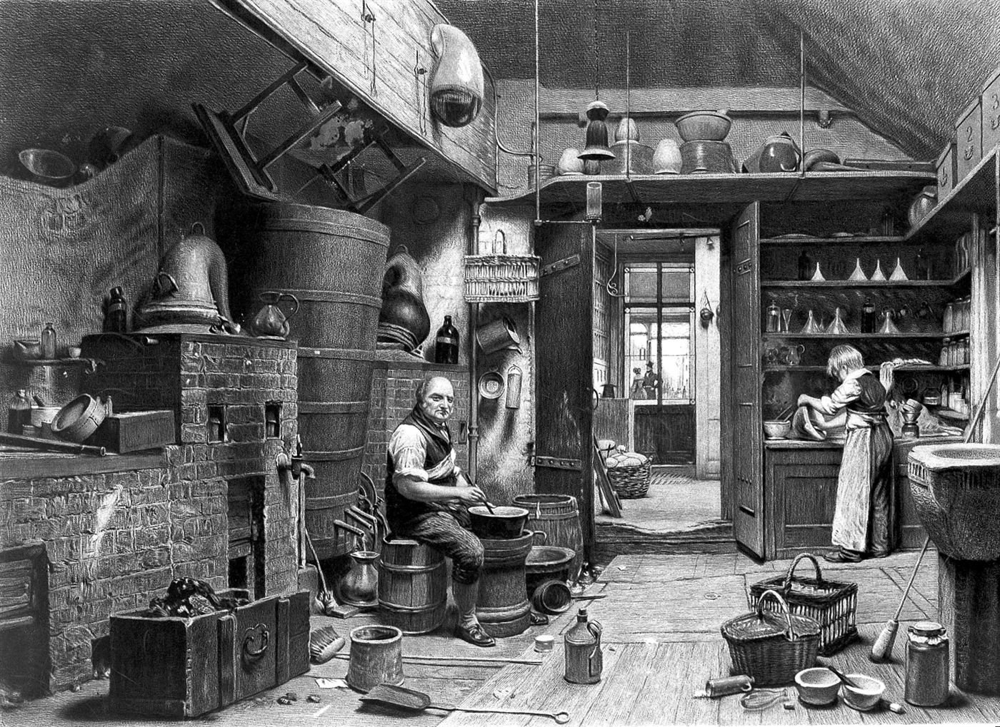
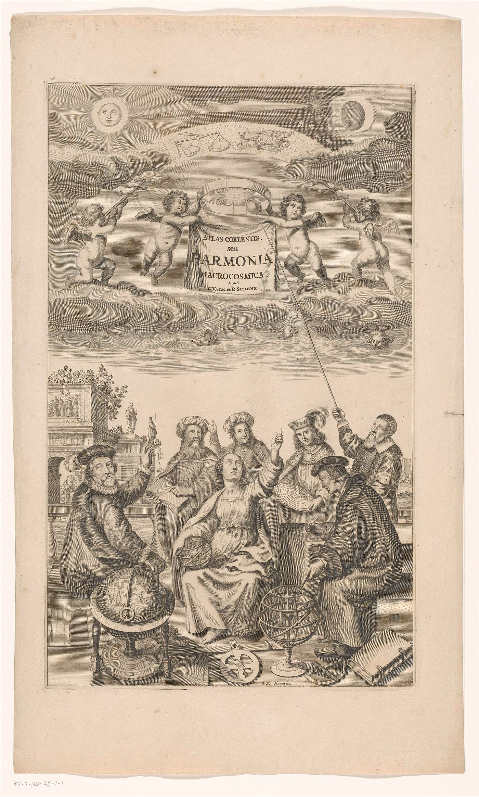

An open reference library of peptides and research compounds. Dosing comes only from approved labels and published trials.
Every claim carries a grade.
Count again for one field.
Most were never tested in people.
27%
Of 175 compounds in the codex, 48 have at least one randomized controlled trial in people. 127 have no human trial on record at all.
Counted from the entries as they stand today. A compound counts once the codex records a randomized controlled trial in people.
Seventeen fields,one standard.
Open the full codex
Each entry grades its own claims, gives dosing only where a regulator approved it or a trial administered it, and says plainly when nothing is known. It is an educational reference, not medical advice, and not an endorsement of using any compound. The standards and evidence grades are set out in full.


Before you trust any number here, learn how to read a trial.
Five short guides cover evidence grades, trial phases, half-life and how to spot a weak claim.
Missing a compound? Request an entry.